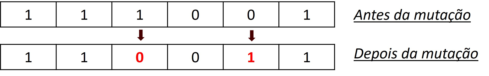

Algoritmo Genético
06 de setembro de 2021
1 Introdução
![logo]()
Um algoritmo genético está entre as heurísticas mais famosas, onde são realizados procedimentos de busca no espaço das soluções viáveis, utilizando regras probabilísticas para combinar soluções a fim de obter melhorias de qualidade. É um algoritmo inspirado na teoria da evolução natural de Charles Darwin. Este algoritmo reflete o processo de seleção natural onde os indivíduos mais aptos são selecionados para reprodução a fim de produzir descendentes na próxima geração.
Cinco fases são consideradas em um algoritmo genético:
- População inicial
- Função de avaliação
- Seleção
- Cruzamento
- Mutação
Veremos cada uma dessas fases abaixo, sendo implementadas utilizando a linguagem R e para exemplificar como funcionam os algoritmos genéticos, irei utilizar o exemplo clássico da mochila, onde devemos encher a mochila com diversos itens sem ultrapassar um determinado limite de peso, otimizando o valor de cada item carregado, onde no final teremos selecionado os melhores itens possíveis dado o limite da nossa mochila.
Esses são os dados:
| Itens | Pesos (Kg) | Pontos de sobrevivência |
|---|---|---|
| Capa de chuva | 2 | 5 |
| Canivete | 1 | 3 |
| Água mineral | 6 | 15 |
| Luvas | 1 | 5 |
| Saco de dormir | 4 | 6 |
| Tenda | 9 | 18 |
| Fogão portátil | 5 | 8 |
| Comida enlatada | 8 | 20 |
| Laches | 3 | 8 |
Em algoritmos genéticos trabalhamos com aleatoriedade, sendo assim, para que o resultado na sua máquina seja o mesmo que veremos abaixo devemos definir uma semente.
# Definindo uma semente
set.seed(17)Definindo os objetos.
# Criando as classes
setClass(
"Solucao", # Possíveis soluções para o problema
slots = c(
pesos = "numeric",
pontos_sobrevivencia = "numeric",
limite_peso = "numeric",
nota_avaliacao = "numeric",
peso_total = "numeric",
geracao = "numeric",
cromossomo = "character"
),
prototype = list(
pesos = 0,
pontos_sobrevivencia = 0,
limite_peso = 0,
nota_avaliacao = 0,
geracao = 0
)
)
setClass(
"algoritmoGenetico",
slots = c( # Atributos da classe
tamanho_populacao = "numeric",
populacao = "list",
geracao = "numeric",
melhor_solucao = "Solucao",
lista_solucoes = "list"
)
)1.1 População Inicial

O processo começa com um conjunto de indivíduos denominado População. Cada indivíduo é uma possível solução para o problema que desejamos resolver. Um indivíduo é caracterizado por um conjunto de parâmetros conhecido como Genes. Os genes são unidos em uma string para formar um cromossomo (solução).
# Criando as funções para iniciar a população
gerar_cromossomo <- function(tamanho_cromossomo) {
cromossomo <- sample(
x = c("0", "1"),
size = tamanho_cromossomo,
replace = T
)
return(cromossomo)
}
inicializa_populacao <- function(algoritmo_genetico, pesos, pontos_sobrevivencia, limite) {
for (i in 1:algoritmo_genetico@tamanho_populacao) {
algoritmo_genetico@populacao[[i]] <-
new(
"Solucao",
pesos = pesos,
pontos_sobrevivencia = pontos_sobrevivencia,
limite_peso = limite
)
algoritmo_genetico@populacao[[i]]@cromossomo <- gerar_cromossomo(length(pesos))
}
return(algoritmo_genetico)
}1.2 Função de avaliação
A função de avaliação ou também conhecida como função fitness, determina o quão apto um indivíduo está. Ela dá uma pontuação de aptidão para cada indivíduo. A probabilidade de um indivíduo ser selecionado para reprodução é baseada em sua pontuação de aptidão.
# Como critério de avaliação será utilizado o ponto de sobrevivência
avaliacao <- function(solucao) {
nota <- 0
soma_pesos <- 0
for (i in 1:length(solucao@cromossomo)) {
if (solucao@cromossomo[i] == '1') {
nota <- nota + solucao@pontos_sobrevivencia[i]
soma_pesos <- soma_pesos + solucao@pesos[i]
}
}
if (soma_pesos > solucao@limite_peso) {
nota = 1
}
solucao@nota_avaliacao <- nota
solucao@peso_total <- soma_pesos
return(solucao)
}1.3 Seleção
A ideia da fase de seleção é selecionar os indivíduos mais aptos e deixá-los passar seus genes para a próxima geração. Dois pares de indivíduos ( pais ) são selecionados com base em suas pontuações de aptidão. Indivíduos com alta aptidão têm mais chance de serem selecionados para reprodução.
# Será utilizando o método da roleta viciada para selecionar os pais
soma_avaliacoes <- function(algoritmo_genetico) {
soma <- 0
for (solucao in algoritmo_genetico@populacao) {
soma = soma + solucao@nota_avaliacao
}
return(soma)
}
selecao_roleta <- function(algoritmo_genetico, soma_avaliacoes) { # Método da roleta viciada
pai <- 0
valor_sorteado <- runif(1, min = 0, max = 1) * soma_avaliacoes
soma <- 0
i <- 1
while (i < length(algoritmo_genetico@populacao) & soma < valor_sorteado) {
soma <- soma + algoritmo_genetico@populacao[[i]]@nota_avaliacao
pai <- pai + 1
i <- i + 1
}
return(pai)
}1.4 Cruzamento

O Cruzamento ou crossover é a fase mais significativa em um algoritmo genético. Para cada par de pais a serem acasalados, um ponto de cruzamento é escolhido aleatoriamente de dentro dos genes. Onde os filhos são criados pela troca dos genes dos pais até que o ponto de cruzamento ser alcançado. E esses novos descendentes são adicionados à população.
crossover <- function(solucao_a, solucao_b) {
indices <- 1:length(solucao_a@cromossomo)
corte <- sample(indices, 1)
# cat("\nPonto de corte:", corte)
if (corte == length(solucao_a@cromossomo)) {
filho1 <- solucao_b@cromossomo[1:corte]
filho2 <- solucao_a@cromossomo[1:corte]
} else {
filho1 <- c(solucao_b@cromossomo[1:corte], solucao_a@cromossomo[(corte+1):length(solucao_a@cromossomo)])
filho2 <- c(solucao_a@cromossomo[1:corte], solucao_b@cromossomo[(corte+1):length(solucao_b@cromossomo)])
}
filhos <- list( # Construtor
new(
"Solucao",
pesos = solucao_a@pesos,
pontos_sobrevivencia = solucao_a@pontos_sobrevivencia,
limite_peso = solucao_a@limite_peso,
geracao = solucao_a@geracao + 1,
cromossomo = filho1
),
new(
"Solucao",
pesos = solucao_b@pesos,
pontos_sobrevivencia = solucao_b@pontos_sobrevivencia,
limite_peso = solucao_b@limite_peso,
geracao = solucao_b@geracao + 1,
cromossomo = filho2
)
)
return(filhos)
}1.5 Mutação

Em certos novos descendentes formados, alguns de seus genes podem ser submetidos a uma mutação com baixa probabilidade aleatória. Isso implica que alguns dos genes do cromossomo podem ser invertidos.
mutacao <- function(solucao, taxa_mutacao) {
for (i in 1:length(solucao@cromossomo)) {
if (runif(n = 1, min = 0, max = 1) < taxa_mutacao) {
if (solucao@cromossomo[i] == '1') {
solucao@cromossomo[i] <- '0'
} else {
solucao@cromossomo[i] <- '1'
}
}
}
return(solucao)
}E a cada geração será gerada diversas possíveis soluções para o problema, assim devemos escolher a melhor solução em cada geração e posteriormente a melhor solução de todas.
ordena_populacao <- function(populacao) {
populacao_ordenada <- c()
notas_avaliacao <- c()
for (solucao in populacao) {
notas_avaliacao <- c(notas_avaliacao, solucao@nota_avaliacao)
}
lista_posicao <- order(notas_avaliacao, decreasing = T)
for (i in 1:length(lista_posicao)) {
populacao_ordenada <- c(populacao_ordenada, populacao[[lista_posicao[i]]])
}
return(populacao_ordenada)
}
melhor_solucao <- function(algoritmo_genetico, solucao) {
algoritmo_genetico@lista_solucoes <- c(
algoritmo_genetico@lista_solucoes,
solucao@nota_avaliacao
)
if (solucao@nota_avaliacao > algoritmo_genetico@melhor_solucao@nota_avaliacao) {
algoritmo_genetico@melhor_solucao <- solucao
}
return(algoritmo_genetico)
}
# Visualizar a melhor solução de cada geração
visualiza_geracao <- function(algoritmo_genetico) {
melhor <- algoritmo_genetico@populacao[[1]]
cat(
"\n- Geração:", melhor@geracao,
"\nNota sobrevivência:", melhor@nota_avaliacao,
"\nPeso total:", melhor@peso_total,
"\nCromossomo:", melhor@cromossomo
)
}Função principal do algoritmo genético:
resolver <- function(algoritmo_genetico, taxa_mutacao, num_geracoes, pesos, pontos_sobrevivencia, limite_peso) {
ag <- algoritmo_genetico
ag <- inicializa_populacao(
algoritmo_genetico = ag,
pesos = pesos,
pontos_sobrevivencia = pontos_sobrevivencia,
limite = limite_peso
)
for (i in 1:ag@tamanho_populacao) {
ag@populacao[[i]] <- avaliacao(ag@populacao[[i]])
}
ag@populacao <- ordena_populacao(ag@populacao)
ag@melhor_solucao <- ag@populacao[[1]]
visualiza_geracao(algoritmo_genetico = ag)
for (i in 1:num_geracoes) {
soma = soma_avaliacoes(algoritmo_genetico = ag)
nova_populacao <- c()
for(solucoes_geradas in 1:(ag@tamanho_populacao / 2)) {
pai1 <- 1
pai2 <- 1
while (pai1 == pai2) {
pai1 <- selecao_roleta(
algoritmo_genetico = ag,
soma_avaliacoes = soma
)
pai2 <- selecao_roleta(
algoritmo_genetico = ag,
soma_avaliacoes = soma
)
}
# Combinando os pais e criando dois filhos
filhos = crossover(
solucao_a = ag@populacao[[pai1]],
solucao_b = ag@populacao[[pai2]]
)
filho1 <- mutacao(
solucao = filhos[[1]],
taxa_mutacao = 0.05
)
filho2 <- mutacao(
solucao = filhos[[2]],
taxa_mutacao = 0.05
)
filhos_gerados <- c(filho1, filho2)
nova_populacao <- c(nova_populacao, filhos_gerados)
}
ag@populacao <- nova_populacao
# Realizando a avaliação da nova população
for (i in 1:ag@tamanho_populacao) {
ag@populacao[[i]] <- avaliacao(ag@populacao[[i]])
}
ag@populacao <- ordena_populacao(ag@populacao)
visualiza_geracao(algoritmo_genetico = ag)
ag <- melhor_solucao(
algoritmo_genetico = ag,
solucao = ag@populacao[[1]]
)
}
cat(
"\n----------------------------------",
"\n**** Melhor solução ***",
"\nGeração:", ag@melhor_solucao@geracao,
"\nromossomo:", ag@melhor_solucao@cromossomo,
"\nPeso total:", ag@melhor_solucao@peso_total,
"\nPontos de sobrevivência:", ag@melhor_solucao@nota_avaliacao
)
return(ag)
}Resolvendo o problema da mochila:
itens <- c(
"Capa de chuva",
"Canivete",
"Água mineral",
"Luvas",
"Saco de dormir",
"Tenda",
"Fogão portátil",
"Comida enlatada",
"Laches"
)
pesos <- c(2, 1, 6, 1, 4, 9, 5, 8, 3)
pontos_sobrevivencia <- c(5, 3, 15, 5, 6, 18, 8, 20, 8)
# -----------------
limite <- 25 # Limite da mochila
tamanho <- 20 # Tamanho da população
probabilidade_mutacao <- 0.05
numero_geracoes <- 50
ag <- new(
"algoritmoGenetico",
tamanho_populacao = tamanho
)
ag <- resolver(
algoritmo_genetico = ag,
taxa_mutacao = probabilidade_mutacao,
num_geracoes = numero_geracoes,
pesos = pesos,
pontos_sobrevivencia = pontos_sobrevivencia,
limite_peso = limite
)##
## - Geração: 0
## Nota sobrevivência: 57
## Peso total: 25
## Cromossomo: 0 0 0 1 1 1 0 1 1
## - Geração: 1
## Nota sobrevivência: 57
## Peso total: 25
## Cromossomo: 0 0 0 1 1 1 0 1 1
## - Geração: 2
## Nota sobrevivência: 57
## Peso total: 25
## Cromossomo: 0 0 0 1 1 1 0 1 1
## - Geração: 3
## Nota sobrevivência: 57
## Peso total: 25
## Cromossomo: 0 0 0 1 1 1 0 1 1
## - Geração: 4
## Nota sobrevivência: 57
## Peso total: 25
## Cromossomo: 0 0 0 1 1 1 0 1 1
## - Geração: 5
## Nota sobrevivência: 57
## Peso total: 25
## Cromossomo: 0 0 0 1 1 1 0 1 1
## - Geração: 6
## Nota sobrevivência: 57
## Peso total: 25
## Cromossomo: 0 0 0 1 1 1 0 1 1
## - Geração: 7
## Nota sobrevivência: 57
## Peso total: 25
## Cromossomo: 0 0 0 1 1 1 0 1 1
## - Geração: 8
## Nota sobrevivência: 57
## Peso total: 25
## Cromossomo: 0 0 0 1 1 1 0 1 1
## - Geração: 9
## Nota sobrevivência: 57
## Peso total: 25
## Cromossomo: 0 0 0 1 1 1 0 1 1
## - Geração: 10
## Nota sobrevivência: 57
## Peso total: 25
## Cromossomo: 0 0 0 1 1 1 0 1 1
## - Geração: 11
## Nota sobrevivência: 54
## Peso total: 24
## Cromossomo: 1 0 0 1 1 1 0 1 0
## - Geração: 12
## Nota sobrevivência: 54
## Peso total: 24
## Cromossomo: 1 0 0 1 1 1 0 1 0
## - Geração: 13
## Nota sobrevivência: 57
## Peso total: 25
## Cromossomo: 0 0 0 1 1 1 0 1 1
## - Geração: 14
## Nota sobrevivência: 57
## Peso total: 25
## Cromossomo: 0 0 0 1 1 1 0 1 1
## - Geração: 15
## Nota sobrevivência: 55
## Peso total: 25
## Cromossomo: 0 1 0 0 1 1 0 1 1
## - Geração: 16
## Nota sobrevivência: 57
## Peso total: 25
## Cromossomo: 0 0 0 1 1 1 0 1 1
## - Geração: 17
## Nota sobrevivência: 57
## Peso total: 25
## Cromossomo: 0 0 0 1 1 1 0 1 1
## - Geração: 18
## Nota sobrevivência: 57
## Peso total: 25
## Cromossomo: 0 0 0 1 1 1 0 1 1
## - Geração: 19
## Nota sobrevivência: 57
## Peso total: 25
## Cromossomo: 0 0 0 1 1 1 0 1 1
## - Geração: 20
## Nota sobrevivência: 57
## Peso total: 25
## Cromossomo: 0 0 0 1 1 1 0 1 1
## - Geração: 21
## Nota sobrevivência: 52
## Peso total: 23
## Cromossomo: 0 1 0 1 1 1 0 1 0
## - Geração: 22
## Nota sobrevivência: 58
## Peso total: 24
## Cromossomo: 0 0 1 1 0 1 0 1 0
## - Geração: 23
## Nota sobrevivência: 58
## Peso total: 24
## Cromossomo: 0 0 1 1 0 1 0 1 0
## - Geração: 24
## Nota sobrevivência: 58
## Peso total: 24
## Cromossomo: 0 0 1 1 0 1 0 1 0
## - Geração: 25
## Nota sobrevivência: 58
## Peso total: 24
## Cromossomo: 0 0 1 1 0 1 0 1 0
## - Geração: 26
## Nota sobrevivência: 58
## Peso total: 24
## Cromossomo: 0 0 1 1 0 1 0 1 0
## - Geração: 27
## Nota sobrevivência: 58
## Peso total: 24
## Cromossomo: 0 0 1 1 0 1 0 1 0
## - Geração: 28
## Nota sobrevivência: 56
## Peso total: 24
## Cromossomo: 0 1 1 0 0 1 0 1 0
## - Geração: 29
## Nota sobrevivência: 54
## Peso total: 22
## Cromossomo: 0 1 0 1 0 1 0 1 1
## - Geração: 30
## Nota sobrevivência: 55
## Peso total: 25
## Cromossomo: 0 1 0 0 1 1 0 1 1
## - Geração: 31
## Nota sobrevivência: 56
## Peso total: 24
## Cromossomo: 0 1 1 0 0 1 0 1 0
## - Geração: 32
## Nota sobrevivência: 54
## Peso total: 25
## Cromossomo: 1 1 0 0 0 1 1 1 0
## - Geração: 33
## Nota sobrevivência: 54
## Peso total: 24
## Cromossomo: 1 0 0 1 1 1 0 1 0
## - Geração: 34
## Nota sobrevivência: 54
## Peso total: 24
## Cromossomo: 1 0 0 1 1 1 0 1 0
## - Geração: 35
## Nota sobrevivência: 54
## Peso total: 25
## Cromossomo: 1 1 0 0 0 1 1 1 0
## - Geração: 36
## Nota sobrevivência: 57
## Peso total: 25
## Cromossomo: 0 0 0 1 1 1 0 1 1
## - Geração: 37
## Nota sobrevivência: 51
## Peso total: 22
## Cromossomo: 1 0 0 0 0 1 0 1 1
## - Geração: 38
## Nota sobrevivência: 54
## Peso total: 22
## Cromossomo: 0 1 0 1 0 1 0 1 1
## - Geração: 39
## Nota sobrevivência: 51
## Peso total: 24
## Cromossomo: 1 0 0 0 0 1 1 1 0
## - Geração: 40
## Nota sobrevivência: 54
## Peso total: 25
## Cromossomo: 1 1 0 0 0 1 1 1 0
## - Geração: 41
## Nota sobrevivência: 51
## Peso total: 24
## Cromossomo: 1 0 0 0 0 1 1 1 0
## - Geração: 42
## Nota sobrevivência: 52
## Peso total: 24
## Cromossomo: 1 0 1 0 1 1 0 0 1
## - Geração: 43
## Nota sobrevivência: 54
## Peso total: 24
## Cromossomo: 0 1 0 1 0 1 1 1 0
## - Geração: 44
## Nota sobrevivência: 56
## Peso total: 24
## Cromossomo: 0 1 1 0 0 1 0 1 0
## - Geração: 45
## Nota sobrevivência: 55
## Peso total: 25
## Cromossomo: 1 1 1 0 1 1 0 0 1
## - Geração: 46
## Nota sobrevivência: 55
## Peso total: 25
## Cromossomo: 1 1 1 0 1 1 0 0 1
## - Geração: 47
## Nota sobrevivência: 55
## Peso total: 25
## Cromossomo: 1 1 1 0 1 1 0 0 1
## - Geração: 48
## Nota sobrevivência: 56
## Peso total: 24
## Cromossomo: 0 1 1 0 0 1 0 1 0
## - Geração: 49
## Nota sobrevivência: 56
## Peso total: 24
## Cromossomo: 0 1 1 0 0 1 0 1 0
## - Geração: 50
## Nota sobrevivência: 56
## Peso total: 24
## Cromossomo: 0 1 1 0 0 1 0 1 0
## ----------------------------------
## **** Melhor solução ***
## Geração: 22
## romossomo: 0 0 1 1 0 1 0 1 0
## Peso total: 24
## Pontos de sobrevivência: 58Quais os itens que deveriam ser levados na mochila?
peso_total <- 0
pontos <- 0
for (i in 1:length(itens)) {
if (ag@melhor_solucao@cromossomo[i] == '1') {
peso_total <- peso_total + pesos[i]
pontos <- pontos + pontos_sobrevivencia[i]
cat(
"\nItem:", itens[i],
" | Peso:", pesos[i],
" | Pontos sobrevivência:", pontos_sobrevivencia[i]
)
}
}##
## Item: Água mineral | Peso: 6 | Pontos sobrevivência: 15
## Item: Luvas | Peso: 1 | Pontos sobrevivência: 5
## Item: Tenda | Peso: 9 | Pontos sobrevivência: 18
## Item: Comida enlatada | Peso: 8 | Pontos sobrevivência: 20cat(
"\n-------------------------------------------",
"\nPeso total:", peso_total, "- Pontos", pontos
) ##
## -------------------------------------------
## Peso total: 24 - Pontos 58Gráfico - Melhores soluções de cada geração:
plot(
x = 1:numero_geracoes,
y = ag@lista_solucoes,
type = "l",
main = "Acompanhamento das soluções",
col = "blue",
xlab = "Gerações",
ylab = "Pontos sobrevivência"
)